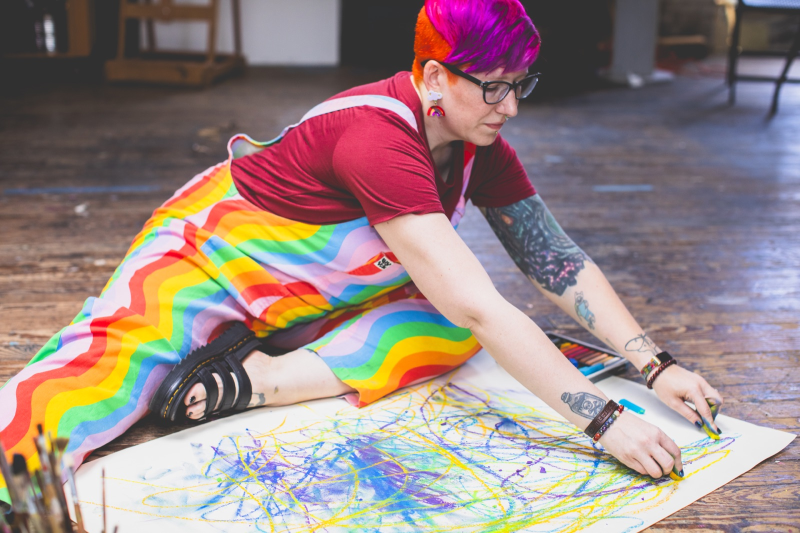

Life is hard. Let's make some art about it.
Start here to connect, create, and explore your next step.
Groups & Workshops
Art Journaling Course
Art & Creative Work
The Creative Community
A weekly creativity workout to expand your emotional range, decision making, and perspective using simple art prompts. No talent required.
This is not an art class. It's a space to work with your inner experience when talking and thinking stop working. When the world feels heavy and overwhelming, this is a place to show up and take care of yourself without losing your mind.
Why this exists
When emotions spike, the mind tightens. Everything feels urgent. Thinking goes rigid. Reaction takes over. Choice disappears.
You can't reason your way out of that state.
Art interrupts the loop.
Putting what you're feeling on paper moves it out of alarm mode and into something the body can process. The nervous system steadies. Perspective widens. Options start to come back online.
This isn't about insight or analyzing yourself. It's about shifting your internal state so choice is possible again, even when the outside world feels like chaos.

What we do together
Each week we meet live for a guided creative practice.
No talent required. No critique. No fixing. This is a practice, not a performance.
You arrive as you are and leave steadier than you came in.
In addition to the guided sessions, we also hold weekly open studio time. These are quieter, lightly held spaces to work alongside others, revisit prompts, or follow what is alive for you without instruction. Come to make, to regulate, or just to be in creative company.
Who this is for
This space is for thoughtful, self aware people, artists, mystics, makers, and regular humans alike, who still find themselves stuck when emotion takes the wheel.
If you tend to overthink, loop, override your body, or white knuckle your way through difficult states, this practice offers another way in. One that works with the nervous system instead of trying to outthink it.
You can be a seasoned creator or someone who never claims that label. What matters is wanting a reliable way to come back to yourself in a world that often makes that feel impossible.
What people notice over time
With consistency, participants report feeling calmer in moments that used to hijack them. Decision making becomes less reactive. Emotional swings soften. The inner world feels more manageable.
This is not a quick fix. It is a way of training your system to respond instead of react. A way to survive and stay present even when life is messy.
The Invitation
Come as you are. Bring whatever is alive for you, restless thoughts, swirling feelings, or just a quiet need to create. We'll take it to paper, move through it, and leave feeling steadier, clearer, and more in touch with ourselves.
No skill required, no judgment, no pressure, just a space to show up and be seen alongside others doing the same.
If you want a different way to meet yourself and your inner world, you belong here.

Meet your guide
I'm Bethanie Bright!
I'm a registered art therapist, licensed clinical counselor, and intuitive artist.
I guide people through creative practices that help regulate emotions, expand perspective, and strengthen inner authority using simple art prompts.
My work blends art therapy, recovery principles, and intuitive process to help people stay steady, present, and connected in a world that often feels overwhelming.